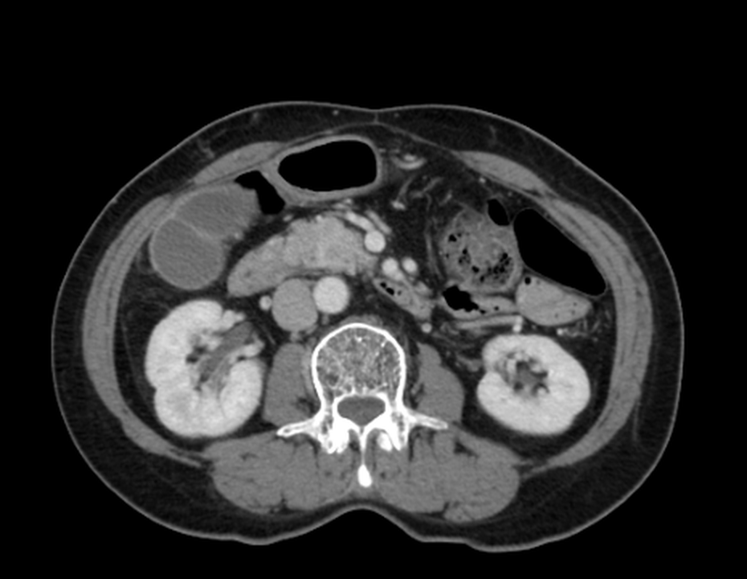
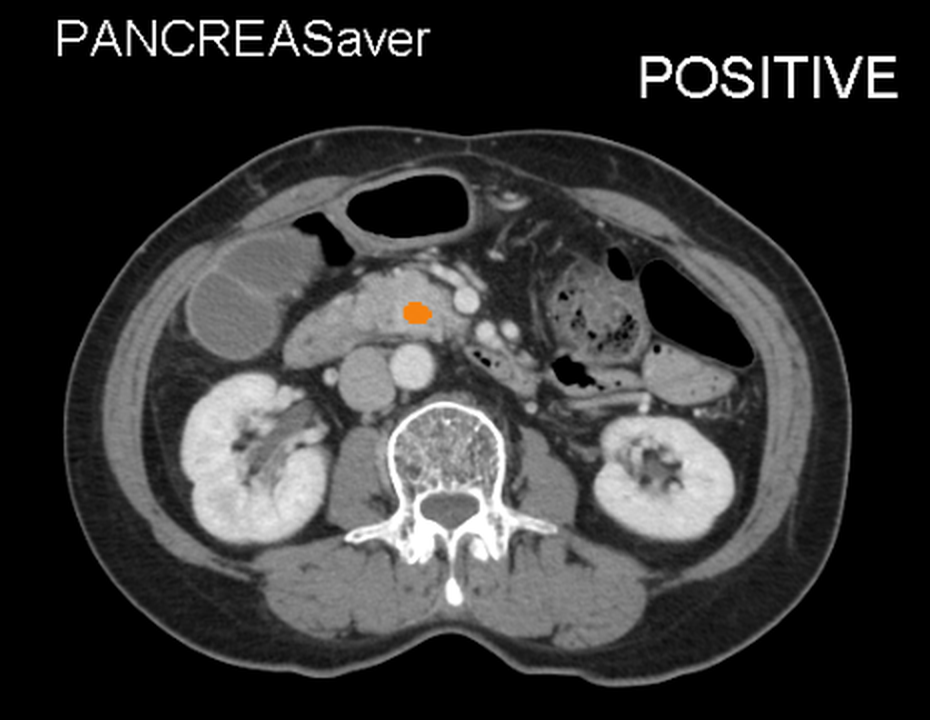

胰臟癌早期幾乎沒有症狀。PANCREASaver® 以 AI 在腫瘤還小於 2 公分時就找到它——從篩檢、發現、診斷、治療到追蹤，守護您與家人的每一步。
癌症照護不該是零散的檢查與等待。捲動跟隨五個關鍵時刻，看見 AI 如何參與其中——而每一個時刻，都為「早一點發現」而存在。
第一站：了解威脅，是守護的開始。
它藏在身體深處，早期幾乎不發出聲音。
胰臟位於腹腔深處，早期腫瘤大多沒有明顯症狀，等到背痛、黃疸、體重減輕出現時，往往已進入晚期。這就是為什麼「定期篩檢」與「高風險族群警覺」如此重要。
第二站：親手體驗 AI 如何在一張 CT 上發現可疑病灶。


拖曳分隔線，親眼見證 AI 的判斷。
左側是原始 CT 影像，右側是 PANCREASaver® 的 AI 判讀結果。這不是示意圖——它是系統在真實去識別化影像上的輸出，而 AI 標註的是肉眼難以察覺的微小病灶。
第三站：AI 的發現，最終由醫師與臨床證據把關。
AI 不取代醫師——它讓醫師看得更遠。
PANCREASaver® 的判讀結果會交回放射科醫師確認，進入標準的診斷流程。支撐這套系統的，是發表於國際期刊的多中心臨床驗證：全國多中心 AUC 0.95，<2cm 腫瘤敏感度 92.1%。
第四站：發現的早晚，改變生命的走向。
同樣的疾病，不同的時間點，是不同的結局。
胰臟癌是少數「分期決定命運」的癌症：腫瘤 ≤1cm 時發現，五年存活率可達 80% 以上；轉移後才發現則約 3%——早一步，結局完全不同。
第五站：早期發現的意義，在於往後的每一天。
檢測不是目的，健康才是。AI 的存在，是讓每一位受檢者都能繼續騎車、爬山、陪家人吃飯——把日子過成想要的樣子。
每一張餐桌，都值得完整的圓。
騎車、慢跑、旅行——健康的身體才有無限可能。
人生的山，要一步一步親自走完。
每一項數據都來自真實臨床研究與法規認證，經得起檢驗。
五個簡單問題，幫助您了解自己的風險輪廓。本測驗不構成醫療診斷，結果僅供參考。
您的年齡是否 40 歲以上？
您的一等親（父母、兄弟姊妹、子女）是否有胰臟癌病史？
您是否有糖尿病，或近期出現血糖異常？
您是否長期吸菸或重度飲酒？
您是否有慢性胰臟炎病史？
不過，胰臟癌的風險會隨年齡上升。維持健康生活型態，並在年度健檢中持續關注胰臟相關檢查，就是最好的預防。
* 本測驗僅供衛教參考，不構成醫療診斷。
您屬於胰臟癌高風險族群。建議與腸胃科或影像醫學科醫師諮詢，評估影像篩檢（CT/MRI）的適合性——早期發現，是改變預後最重要的關鍵。
* 本測驗僅供衛教參考，不構成醫療診斷。